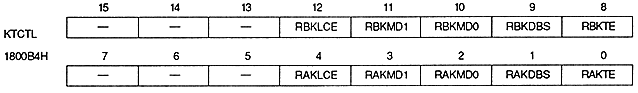

RAXSTRE | 1800B2H | Bit 0 | Rotation parameter A for Xst |
RBXSTRE | 1800B2H | bit 8 | Rotation parameter B for Xst |
RAYSTRE | 1800B2H | bit 1 | Rotation parameter A for Yst |
RBYSTRE | 1800B2H | bit 9 | Rotation parameter B for Yst |
RAKASTRE | 1800B2H | bit 2 | Rotation parameter A for KAst |
RBKASTRE | 1800B2H | bit 10 | Rotation parameter B for KAst |
RxSTRE | Processing |
0 | Do not read specified parameter on that line |
1 | Read specified parameter on that line |

Coefficient line color enable bit : Coefficient line color enable bit (RAKLCE, RBKLCE)
RAKLCE | 1800B4H | Bit 4 | For rotation parameter A |
RBKLCE | 1800B4H | bit 12 | For rotation parameter B |
RxKLCE | Processing | ||
0 | Do not use line color screen data in coefficient data |
RAKMD1,RAKMD0 | 1800B4H | bits 3,2 | For rotation parameter A |
RBKMD1, RBKMD0 | 1800B4H | bit 11 , 10 | For rotation parameter B |